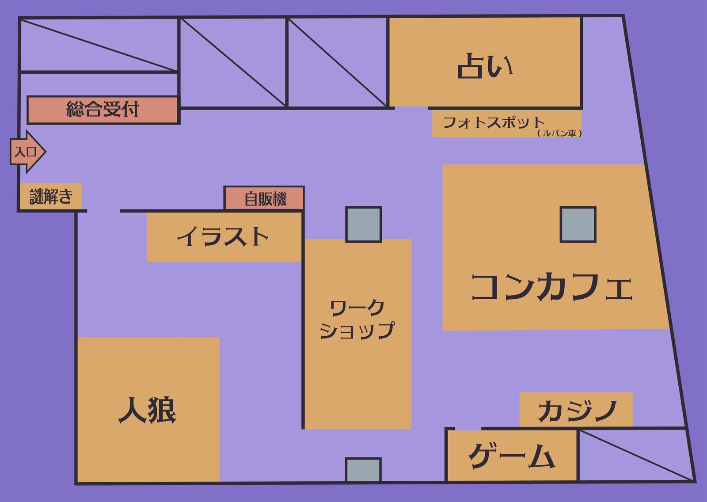

笑顔満祭-みんなで繋ぐ青春
今年も始まる、あの場所での特別な一日。
各教室に広がる企画と熱気が、あなたの訪れを待っています。
— 閉門まであと —
09 : 30
中央広場メインステージにて。当日の諸注意もお伝えします。
10 : 00
各教室・ブースが一斉オープン。企画マップを片手にどうぞ！
12 : 00
フードコーナー・屋台エリアにお立ち寄りください。混雑が予想されます。
13 : 00
ステージイベント・パフォーマンスも午後から続々スタート。
15 : 30
最優秀企画賞の発表と、実行委員からのご挨拶。
16 : 30
本日はご来場いただきありがとうございました。
Café
大トロ（入口正面奥）
手作りドリンクとスイーツのカフェ企画。 ゆったりとした空間でひと休みどうぞ。
Game
サーモン・大トロ（サーモン前）
白熱のゲーム＆カジノ企画。 腕試しと運試しを楽しんでください。
Cheki
カマトロの扉側
部員のイラスト・作品を展示するアート企画。 個性あふれる作品をお楽しみください。
Photo
うに前
思い出に残る一枚を。 フォトジェニックなフォトスポット企画です。
Game
カマトロ手前（館の閉鎖された地下室）
独自通貨を使った戦略ゲーム企画。 駆け引きと推理で勝利を目指せ。
Mystery
受付：のりの手前（謎解き自体はキャンパス全体）
会場を巡りながら謎を解くリアル謎解き企画。 チームで協力してクリアを目指そう。
Fortune
うに
タロット・手相・星占いなど、 あなたの運勢を占います。
Workshop
カマトロ横の10・11・12卓付近
ものづくり体験のワークショップ企画。 自分だけのオリジナル作品を作ろう。
Photo
キャンパス全体
キャンパス内を写真で彩る展示企画。
🎟 Lottery
場所 未定 — 当日発表
S賞・A賞・B賞・C賞・D賞・ラストワン賞の豪華景品ラインナップ！
当日限定の数量限定くじ。

会場内のゴミ箱は「燃えるゴミ」「燃えないゴミ」「ペットボトル」の3種類です。正しく分別にご協力ください。
他の来場者が映り込む写真のSNS投稿は、当人の同意を得てから行ってください。また、企画によっては撮影禁止の場合があります。各会場のスタッフの指示に従ってください。
会場内での飲酒・喫煙は禁止です。また、迷惑行為（大声・走り回りなど）はお控えください。
体調が優れない場合は、最寄りのスタッフにお声がけください。
屋外企画は悪天候により内容が変更・中止になる場合があります。当日のSNSやこのページでご確認ください。